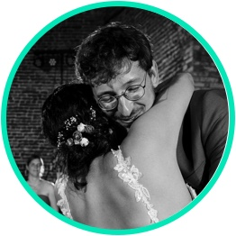

Gertjan & Amber
“ We waren super tevreden van Gert als DJ op ons trouwfeest. Het was eenvoudig om met hem af te spreken, hij bracht al het professioneel materiaal zelf mee en luisterde goed naar onze muzikale trouwwensen. Maar bovenal heeft hij er tijdens ons trouwfeest een zalig feestje van gemaakt, waarbij hij alle genodigden mee had. Ik zou DJ Gette aan iedereen aanraden! "
Jan & Kim
“ Een trouw zonder goede DJ is als een café zonder bier. Gette is de topdj die onze dag af heeft gemaakt. Hij past zich aan aan zijn publiek en is een DJ die geniet van de avond en niet zomaar even plaatjes komt draaien. Ik kon er blind op vertrouwen dat hij voor ambiance ging zorgen! Nogmaals dikke merci! ”
Joris & Laura
“ We waren super tevreden van Gert als DJ op ons trouwfeest. Het was eenvoudig om met hem af te spreken, hij bracht al het professioneel materiaal zelf mee en luisterde goed naar onze muzikale trouwwensen. Maar bovenal heeft hij er tijdens ons trouwfeest een zalig feestje van gemaakt, waarbij hij alle genodigden mee had. Ik zou DJ Gette aan iedereen aanraden! "

Lennert & Eva
“ We waren super tevreden van Gert als DJ op ons trouwfeest. Het was eenvoudig om met hem af te spreken, hij bracht al het professioneel materiaal zelf mee en luisterde goed naar onze muzikale trouwwensen. Maar bovenal heeft hij er tijdens ons trouwfeest een zalig feestje van gemaakt, waarbij hij alle genodigden mee had. Ik zou DJ Gette aan iedereen aanraden! "

Thomas en Laura-Ann
“ Met complimenten van de jury: GETTE overtrof onze verwachtingen. Hij stelde zich professioneel op en ging flexibel om met onze specifieke wensen. Meteen na de openingsdans stond iedereen op de dansvloer en geen moment stond deze leeg. Nadien kregen we van zowel familie als vrienden complimenten over de gedraaide muziek! Hij heeft er mee een topfeest van gemaakt! "